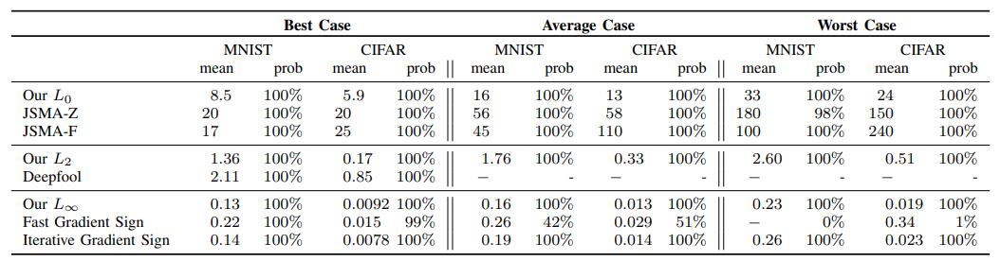
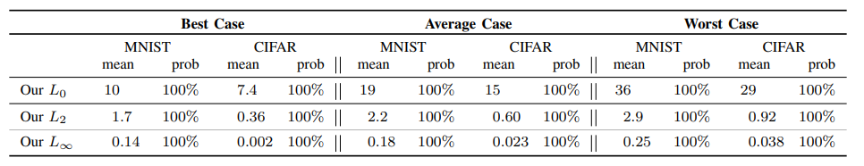

Advanced Machine Learning Final Project
Paper Introduction & Summarization
Nowadays lots of neural networks, including deep neural network, have become increasingly effective at many difficult machine-learning tasks. However, there are also lots of researchs which shows the vulnerability of the neural network from attack using advarsarial example [4]. The appearance of the algorithm that finds the advarsarial examples, attack algorithm, has inspired research on how to harden neural networks against these kinds of attacks. Defensive distillation [5] is one recent defense algorithm proposed for hardening neural networks against adversarial examples. The proposed defensive distillation can be applied easily to any feed-forward neural network, and defeats existing attack algorithms and reduces their success probability from 95% to 0.5% with ease. This paper [1] proposed 3 different new attack algorithm using L_0, L_2, L_inf distances metrics. This paper first shows the excellence of the proposed attack comparing with the previous approaches. Jacobian based Saliency Map Attack (JSMA) [6] is used as a comparing set using L_0 distance as a cost function of optimizer. Deepfool [7] is also introduced as a comparing set of attack technique optimized for the L_2 distance metric. Fast graident sign method [8] is used as a comparing set of optimizer using L_inf as a distance metric.
|  |
This paper also applied these attacks to defensive distillation and discover that distillation provides little security benefit over un-distilled networks when applying the propsed attacks. In the original work, increasing the temperature was found to consistently reduce attack success rate [1]. On MNIST, this goes from a 91% success rate at T=1 to a 24% success rate for T=5 and finally 0.5% success at T=100. Interestingly, the proposed attack did not degrade even though the distillation temperature increases from t=1 to t=100. The success rate is described in the table below.
|  |
Furthermore, the mean advarsarial distance does not change even though the distillation temperature becomes higher. Figure below shows that proposed attacks works in a good mannor even though the distillation temperature becomes higher which effectively degrade the performance of the previous attack approaches.
 |
In short, this paper proposed efficient attack algorithms which are using L_0, L_2, and L_inf distance metric as a cost function of the optimizer, and showed that proposed algorithms defeat defensive distillation. Also this paper mention that their attacks more generally can be used to evaluate the efficacy of potential defenses.
Measurements and Analysis When Attempting the origin Result
Bipedal/Quadrupedal Locomotion
whole body control
trajectory planning
Cooperative Robotics
Reference
[1] Carlini, Nicholas, and David Wagner. "Towards evaluating the robustness of neural networks." 2017 IEEE Symposium on Security and Privacy (SP). IEEE, 2017.
[2] Athalye, Anish, Nicholas Carlini, and David Wagner. "Obfuscated gradients give a false sense of security: Circumventing defenses to adversarial examples." arXiv preprint arXiv:1802.00420 (2018).
[3] Vilares, David, and Carlos Gómez-Rodríguez. "Harry Potter and the Action Prediction Challenge from Natural Language." arXiv preprint arXiv:1905.11037 (2019).
[4] Szegedy, Christian, et al. "Intriguing properties of neural networks." arXiv preprint arXiv:1312.6199 (2013).
[5] Papernot, Nicolas, et al. "Distillation as a defense to adversarial perturbations against deep neural networks." 2016 IEEE Symposium on Security and Privacy (SP). IEEE, 2016.
[6] Papernot, Nicolas, et al. "The limitations of deep learning in adversarial settings." 2016 IEEE European Symposium on Security and Privacy (EuroS&P). IEEE, 2016.
[7] Moosavi-Dezfooli, Seyed-Mohsen, Alhussein Fawzi, and Pascal Frossard. "Deepfool: a simple and accurate method to fool deep neural networks." Proceedings of the IEEE conference on computer vision and pattern recognition. 2016.
[8] Goodfellow, Ian J., Jonathon Shlens, and Christian Szegedy. "Explaining and harnessing adversarial examples." arXiv preprint arXiv:1412.6572 (2014).